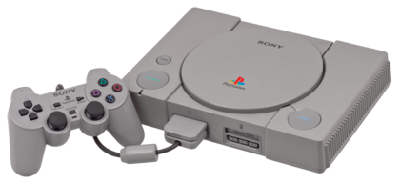
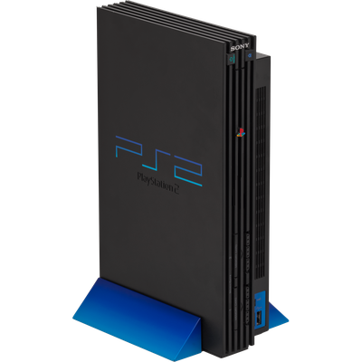
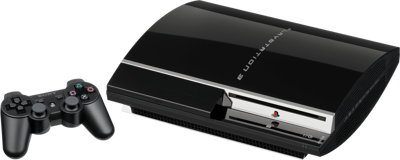
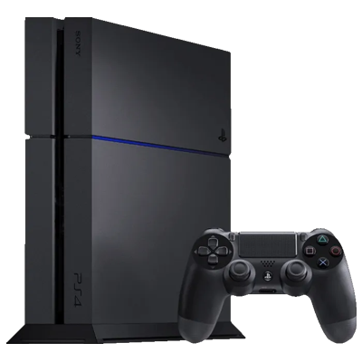
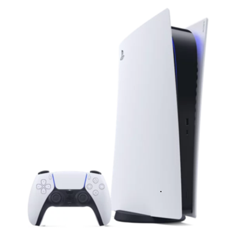

PlayStation 1
Depois do fim da parceria, a Sony decidiu criar o próprio console que foi chamado de PlayStation. O console de quinta geração foi lançado no ano de 1994 no dia 3 de dezembro no Japão, e se tornou um rápido sucesso no meio dos videogames por sua vasta biblioteca de jogos e o preço acessível.
O PlayStation 1 revolucionou a indústria dos jogos ao melhorar os gráficos tridimensionais (3D) com jogos de sucesso, além da introdução dos cartuchos de memória.

PlayStation 2
O sucessor do PlayStation 1 foi lançado no Japão em 4 de março de 2000, o PS2 por seu grande sucesso se tornou o console mais vendido de todos os tempos. O console possui a compatibilidade com a maioria dos jogos de PS1, também se tornou possível jogar online e a reprodução de DVD, muito requisitada na época. No Brasil, o PS2 teve um sucesso absurdo por causa da pirataria que deixou o console e seus jogos acessíveis.

PlayStation 3
No dia 11 de novembro de 2006 foi lançado o PlayStation 3, marcado pela chegada de discos Blu-ray para gravação de jogos. Foi o primeiro console da Sony a receber a PlayStation Network (PSN), esse serviço permitiu jogar o modo online, se conectar com amigos e comprar jogos de mídias digitais pela PlayStation Store.

O console teve um início difícil por ser caro, e sofrer com o defeito das "luzes amarelas da morte" onde o console não aguentava jogos pesados, que foi corrigido nas versões slim. Os gráficos e performance de alguns jogos multiplataforma no PS3 eram consideradas ruins em relação a outros videogames da época. Mas, após o lançamento do modelo Slim, as vendas do PS3 foram recuperadas.
Playstation 4
O PlayStation 4 foi lançado em 15 de novembro de 2013. Era um console muito potente para sua geração, com uma performance eficiente que permite ao console ter uma vida útil longa.
Marcado por uma biblioteca composta por incríveis jogos exclusivos de alta qualidade, e também melhora pela interatividade entre jogadores depois da implementação do botão "SHARE" no controle que permitiu compartilhar imagens, vídeos e até transmissões ao vivo.

Playstation 5
Em meio a uma pandemia foi lançado o PlayStation 5 no dia 12 de novembro de 2020. A melhora da performance foi principalmente por causa do SSD e pela rápida GPU, que aumentaram a velocidade do console, e tornando o console capaz de exibir uma resolução de 4K.

O videogame trouxe maior imersão para os jogadores com uma tecnologia que capacitou o aprimoramento de experiências sonoras, e sensoriais no controle. Apesar de sua alta capacidade, o console ainda não teve muitos jogos desenvolvidos para essa capacidade, o que seria devido à falta de grandes lançamentos na era atual.
 O diferencial desse console era compatível com cartuchos do Super NES (Nintendo) e o SuperDisc (Sony). Porém, o console não foi lançado devido ao fim da parceria entre a Sony e a Nintendo por disputa de royalties.
O diferencial desse console era compatível com cartuchos do Super NES (Nintendo) e o SuperDisc (Sony). Porém, o console não foi lançado devido ao fim da parceria entre a Sony e a Nintendo por disputa de royalties.